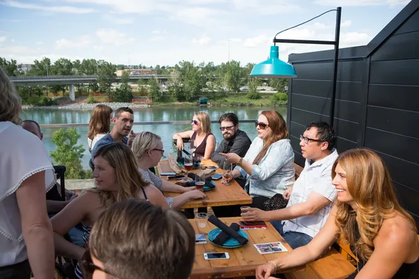
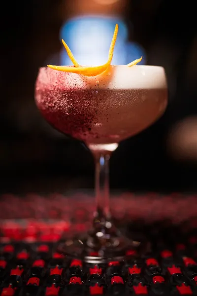
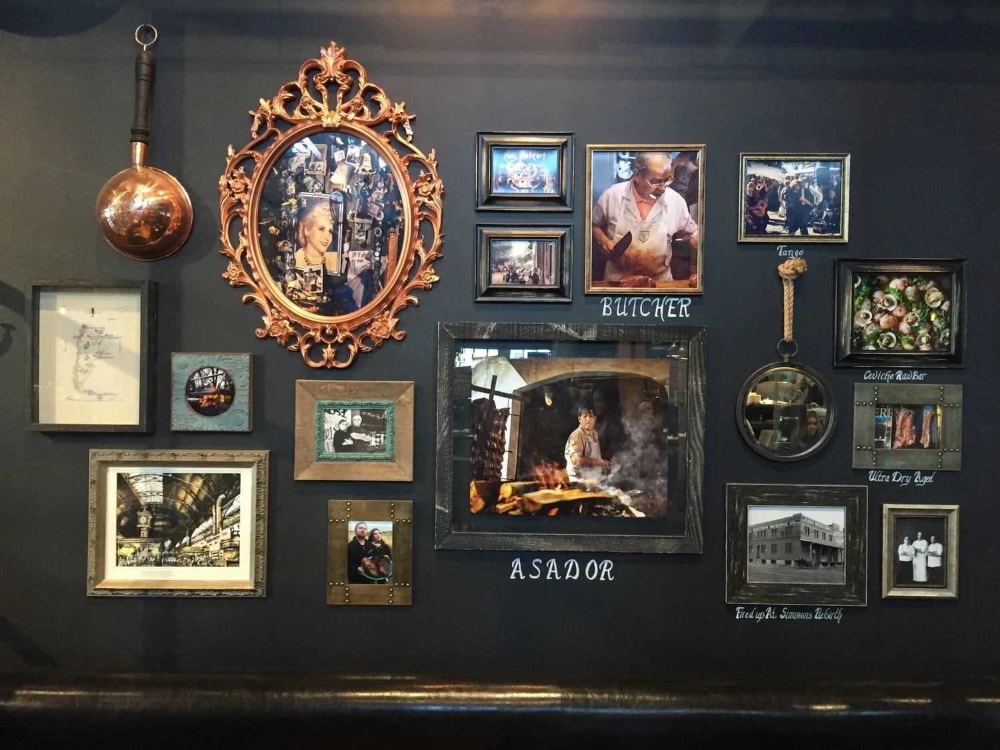
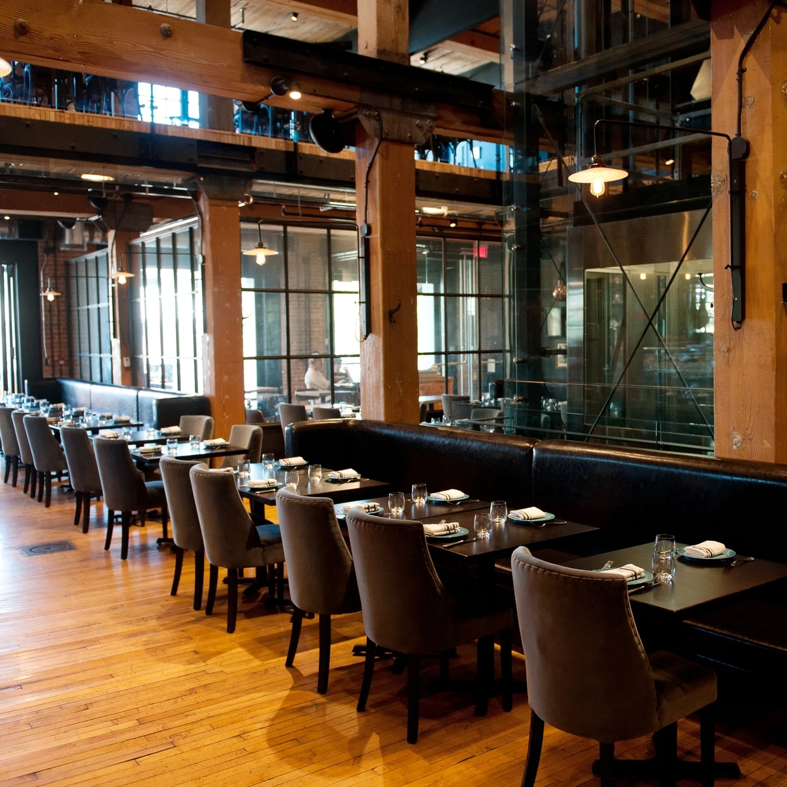
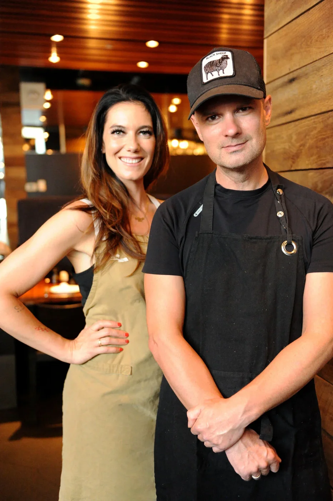
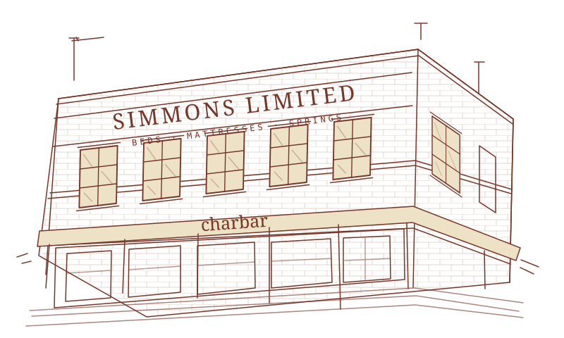

Traditional empanadas 18
Slow-cooked beef, hot sauce butter
WOOD FIRE
STEAKHOUSE
ESTABLISHED
CALGARY, 2015

 A LOOK INSIDE
A LOOK INSIDE

Argentine cooking. Alberta ingredients.
And a very good reason to get together.
618 CONFLUENCE WAY SE
RIGHT BESIDE THE BOW RIVER
Walk in from the Riverwalk and you’ll find the grill going, glasses on the bar, and a room with a few stories of its own.
We’re an Argentine-inspired steakhouse in the old Simmons Building. Alberta beef over wood fire. Ceviche made at your table. Bread from our neighbours at Sidewalk Citizen. Order a few things for the middle and see where the evening takes you.
What are we eating?

From the height of the grill to the last taste of a sauce: a kitchen built around people who care about the details.

Ricardo brings experience from kitchens in Argentina and Canada to the parrilla at charbar. His cooking connects the traditions he knows with the ingredients grown and raised here in Alberta.

Connie DeSousa and John Jackson first worked together in Calgary in 1999. Kitchens abroad, a return home, and a shared belief in local food led them to open charbar in 2015. Today, passing on their craft is part of the work.
A cook turns halved lemons with tongs over the wood fire. Charred edges, warm citrus, ready for a fall mushroom dish. A small detail on the plate; real work at the grill.
FROM THE CHARBAR KITCHEN · @CHARBAR_YYC ↗Cooking, serving, learning the room. CHAR Hospitality’s team brings together cooks and hospitality people who take pride in the work. Explore the group’s opportunities and approach to mentorship.
Work with CHAR Hospitality
The birthdays that become long dinners. The wedding that fills the room. The colleagues who finally put their phones away.
Tell us who’s coming. Our events team will help with the rest.
Plan a gathering
618 Confluence Way SE
Calgary, Alberta T2G 0G1
Weekend brunch until 4 pm. Dinner from 4 pm.
Walk-ins are welcome in the restaurant and cocktail bar.